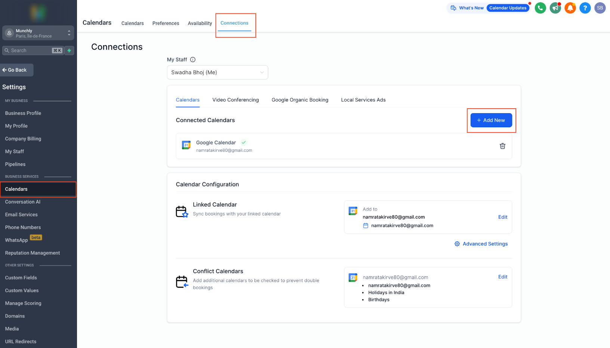
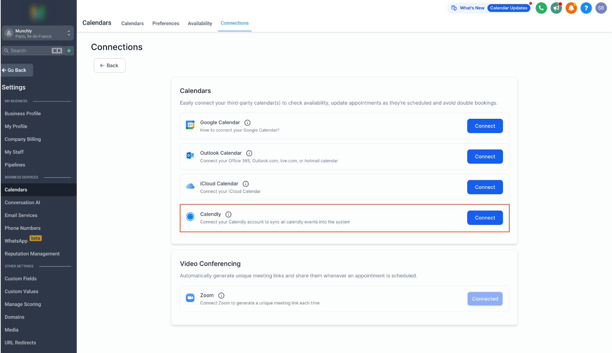
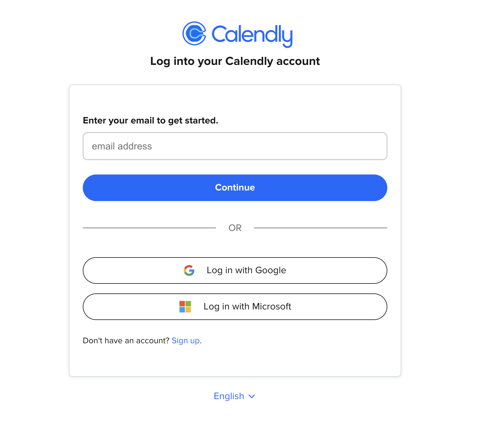
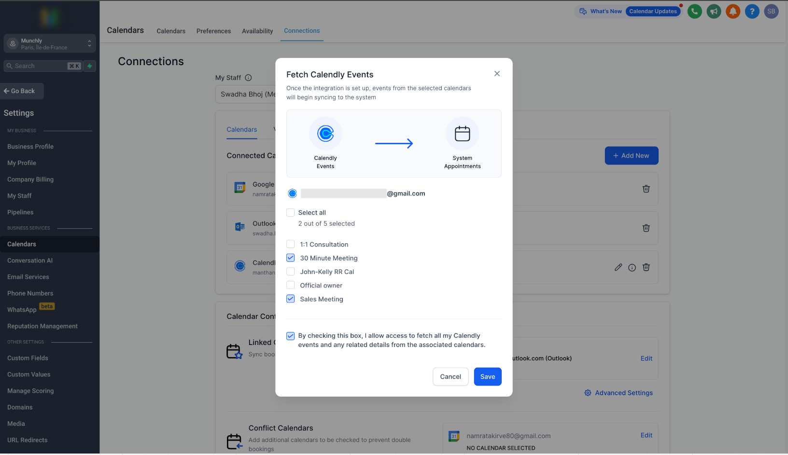
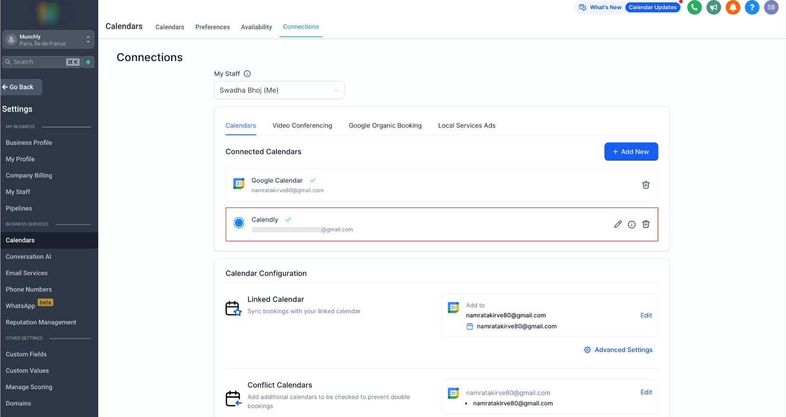
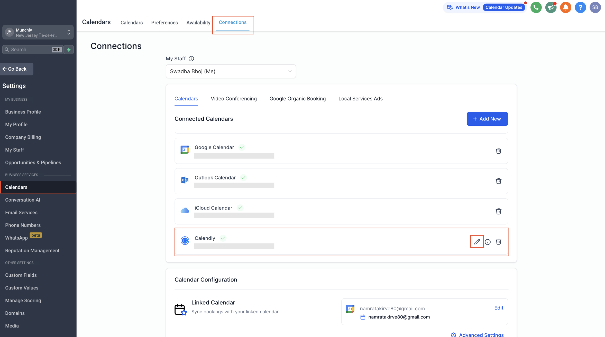
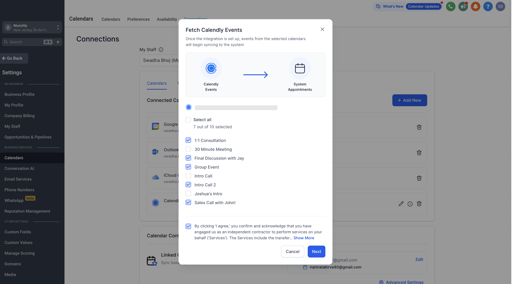
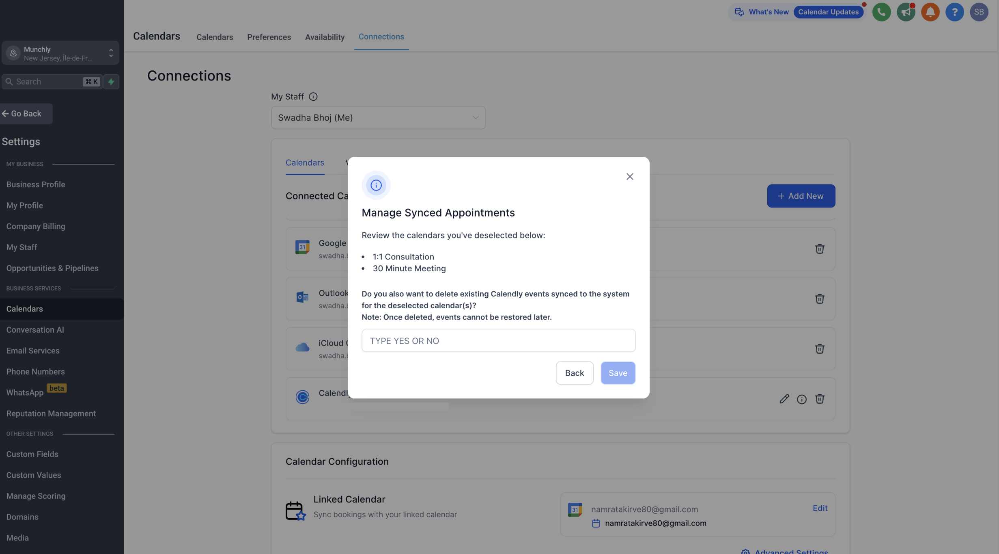
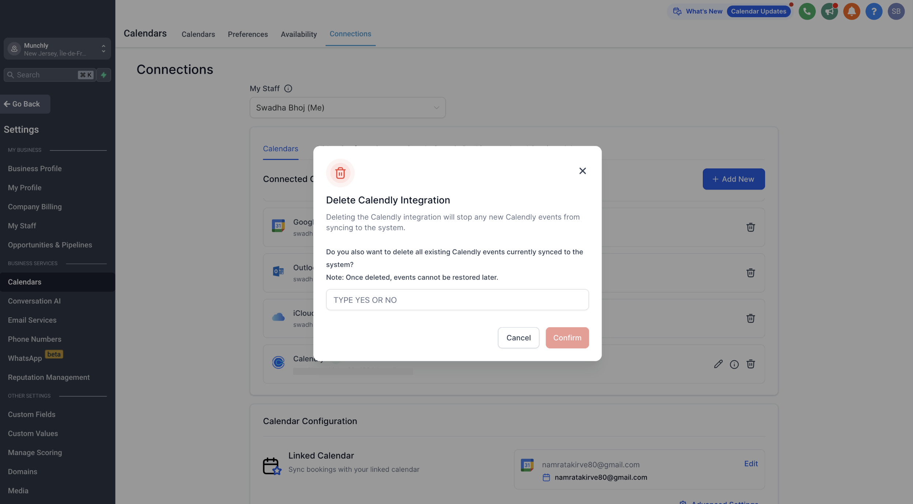

TABLE OF CONTENTS
- Overview
- Prerequisites
- Getting Started: How to Connect Calendly?
- How does the Calendly Integration Work?
- How to Edit Your Selections?
- Deletion of Calendly Events if Calendar is Deselected or Account is Disconnected
- Limitations of Calendly Integration
Overview
Effortlessly connect your Calendly account to our system for seamless access to all your scheduled events. This integration simplifies crucial tasks like creating contacts, managing CRM data, scheduling workflows, and beyond. By optimizing the import process, it guarantees smooth integration of every new Calendly event into our system, boosting overall efficiency.
Prerequisites
To get started, you'll need access to your Calendly account and at least one calendar that you are a part of, as only events created on calendars you're associated with will be fetched.
Getting Started: How to Connect Calendly?
To connect your Calendly account, follow these simple steps:
1. Navigate to 'Calendars' > 'Calendar Settings' > 'Connections.'
2. Click on 'Add New.'

3. Choose 'Calendly' and click 'Connect.'

4. Complete the authentication process by signing into your Calendly account and granting the necessary access.

5. Once your Calendly account is successfully connected, choose the calendars whose events you want to import.

6. Give consent to pull your events by checking the consent box and click on save.
7. Your integration is now set up.
Note: Only events created in the selected calendars after the integration was set up will be imported into the system.

How does the Calendly Integration Work?
The Calendly integration functions differently from other third-party calendar integrations like Google, iCloud, and Outlook.
Calendly Event Sync:
- Events from Calendly will be synced as long as your integration is active and you have selected a calendar.
- When you connect your Calendly account, only events created after setting up the connection will be synced into our system. Remember, syncing will occur only for the calendars you've selected.
- If you ever change your mind and remove a calendar from the connection, events from that calendar won't be synced anymore.
- If you later decide to reconnect that calendar, only new events you create in it after reconnecting will be synced. Any events you had scheduled while the calendar was disconnected won't be synced.
Syncing Process:
- This is a unilateral integration, meaning events are only fetched from Calendly to the system. Events created in the system will not be synced to Calendly.
- Additionally, events synced from Calendly cannot be edited in the system; modifications must be made in Calendly for accurate sync.
Contact Creation:
- All new events created from Calendly to the system will be treated as appointments and not blocked slots.
- This means that for each event, if a guest is found, a subsequent contact will be created for the guest(s) in the system, allowing you to run automations on it.
Appointment Owner:
- For personal calendars, the individual who has integrated Calendly and from whom the event is syncing will be considered the appointment owner.
- For shared calendars, where multiple team members have integrated Calendly into the system, the appointment owner will be chosen randomly.
Contact's Assigned User:
- The contact’s assigned user will be updated to match the appointment owner of their latest appointment.
How to Edit Your Selections?
- Go to Settings > Calendar Settings > Connections.
- Locate Calendly.
- Click on the Edit icon.

- Make changes to the calendars you want to sync with the system. You can add new calendars to start syncing events or remove existing calendars to stop syncing their events.

- Save your preferences.
Deletion of Calendly Events if Calendar is Deselected or Account is Disconnected
When deselecting a calendar, you'll have the option to choose whether you want to delete all synced events of that calendar from the system. Choosing yes will permanently delete all synced events, and they cannot be restored later. If you select the calendar again, only events created after the calendar was reselected will start syncing to the system.
Note: If the calendar is shared (such as a collective calendar or round-robin with more than one host), the events will be deleted from the system only after all team members who have integrated their Calendly account have chosen to permanently delete the appointments. As it is a shared event, even if one team member chooses not to delete the event, it will remain visible in the appointment list view.


If you delete the Calendly integration altogether, you'll also have the option to delete all synced events across all calendars from the system. Similarly, choosing yes will permanently delete all synced events, and they cannot be restored later. If you reconnect your Calendly account and select the same calendars again, only events created after the calendars were reselected will start syncing to the system.
Note: As stated above, for shared calendars, an event will only be completely removed when all team members agree to delete it.

Limitations of Calendly Integration
Each user can connect only one calendly account per subaccount, and the same calendly account cannot be connected across multiple users in different subaccounts. For instance, if User A has already connected their calendly account in Subaccount A, any other user won't be able to link the same calendly account in Subaccount B. However, User A can still connect his same calendly account in Subaccount B
This integration works only with Standard, Teams and Enterprise plans. This does not support FREE or ESSENTIALS plan.
Please note: If you're on a trial period, you'll be able to integrate Calendly. However, once the trial ends and you haven't upgraded to the Standard plan or higher, the integration will no longer function, as you will be on the free plan.